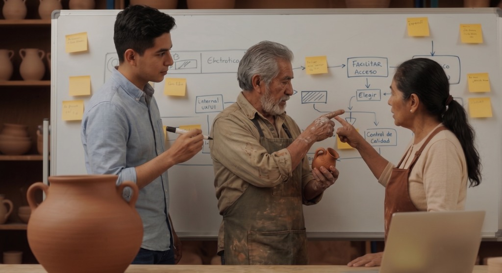

Ver transcripción
Elemento dos: Conceptualizar soluciones comerciales con inteligencia artificial en la MiPyME. Con las necesidades claras, empieza la fase creativa: generar ideas con el cliente, elegir la mejor, definir su modelo de negocio y diseñar cómo va a funcionar el prototipo. Este elemento pide cuatro productos: el informe del proceso de ideación, la matriz de ideas de solución validada por el cliente, el modelo de negocio y el diseño del modelo de funcionamiento del prototipo. Y dos desempeños que se observan en vivo: facilitar la sesión de ideación con el cliente y facilitar la sesión en la que le presentas la propuesta del prototipo. Aquí cuentan dos actitudes: la cooperación, para integrar las propuestas del cliente, y la iniciativa, para proponer alternativas y herramientas adecuadas a su contexto. En Artesanías Tonalli, Diego facilita una sesión de ideación de dos horas con Lucía y Rosa. Acuerdan la pregunta generadora, reúnen catorce ideas, primero las suyas y después las que propone la inteligencia artificial, y Lucía y Rosa eligen tres. De ahí sale la propuesta: un asistente que, a partir de la foto de una pieza, escribe su descripción con el color real y la voz del taller.
2.1 Visión general
Este elemento es el segundo paso del ciclo de creación de soluciones comerciales con IA del EC1835. Su título literal es Conceptualizar soluciones comerciales con Inteligencia Artificial en la MiPyME (E5826).
En este tema se considera facilitar sesiones de ideación de soluciones comerciales de bienes o servicios mediante el uso de IA y facilitar la sesión de presentación de la propuesta del prototipo con el cliente. También se contempla elaborar algunos productos que evidencian esta fase: el informe del proceso de ideación, la matriz de ideas de solución, el modelo de negocio y el diseño del modelo de funcionamiento.
2.2 Cómo se te evaluará en este elemento

Conceptualizar es trabajar codo a codo con el cliente: ideas viables que respeten su identidad. Es el segundo paso del ciclo de creación de soluciones comerciales con IA en la MiPyME. La evaluación de competencias se compone de la valoración de diferentes tipos de evidencias. Para este elemento, deberás demostrar lo siguiente:
| Tipo de evidencia | Cantidad | Cómo se valora |
|---|---|---|
| Desempeños observables | 2 desempeños | Te observan mientras facilitas la sesión de ideación de soluciones con el cliente o usuario mediante el uso de IA y la sesión de presentación de propuesta del prototipo con el cliente o usuario. Para la ideación puedes apoyarte en técnicas como Design Thinking, SCAMPER o Sprint, que aparecen en las referencias del EC1835. |
| Productos entregables | 4 productos | Tus productos se revisan contra los criterios del estándar. Son el informe del proceso de ideación, la matriz de ideas de solución, el modelo de negocio y el diseño del modelo de funcionamiento del prototipo. |
| Conocimientos | 2 conocimientos (nivel Comprensión) | Se evalúan los conocimientos que lista el EC1835, al nivel indicado. La forma de evaluarlos la define tu ECE en el plan de evaluación. |
| Actitudes, hábitos y valores | 2 (Cooperación e Iniciativa) | Se observan durante los desempeños: la Cooperación, al integrar las propuestas y la retroalimentación del cliente, y la Iniciativa, al proponer alternativas de solución y herramientas adecuadas. |
2.3 Facilitar la sesión de ideación de soluciones mediante IA
Revisemos ahora el detalle de los criterios que se deben cumplir en esa sesión de ideación, según el estándar:
Desempeño 2.1 · Facilita la sesión de ideación de soluciones comerciales de bienes/servicios con el cliente/usuario mediante el uso de la IA
- Presentándose ante cliente o usuario al mencionar su nombre completo y su rol como consultor, asesor o desarrollador de soluciones comerciales de bienes y servicios con IA.
- Presentando el objetivo de la sesión.
- Presentando al cliente la metodología a utilizar para la ideación de soluciones comerciales de bienes y servicios con IA.
- Exponiendo los problemas u oportunidades detectadas durante el diagnóstico.
- Realizando preguntas abiertas que faciliten la generación de ideas.
- Utilizando las herramientas, plataformas, aplicaciones o prompts para ideación de preguntas.
- Acordando con los asistentes una pregunta generadora orientada a resolver la necesidad o satisfacer la oportunidad del cliente.
- Construyendo con los asistentes las primeras ideas orientadas a satisfacer o resolver la necesidad del cliente o usuario al utilizar IA.
- Ampliando el alcance de la ideación de soluciones mediante el uso de herramientas, plataformas, aplicaciones o prompts.
- Clasificando verbalmente o por escrito las ideas en categorías de resultados, y
- Seleccionando las ideas que favorezcan una solución orientada a satisfacer la necesidad o resolver el problema del cliente.
Las actitudes, hábitos y valores del Elemento 2
Este elemento evalúa dos actitudes, hábitos o valores (AHV): Cooperación e Iniciativa. El estándar las define así:
- Cooperación: "la manera en que integra las propuestas y retroalimentación del cliente durante el desarrollo de las ideas, el modelo de negocio y el diseño del prototipo."
- Iniciativa: "la manera en que propone alternativas de solución y herramientas adecuadas al cliente y al contexto de la MiPyME."
Video ejemplo
A continuación, observa un video que ejemplifica cómo facilita Diego la sesión de ideación de soluciones.
2.4 Productos derivados de la conceptualización de soluciones
Revisemos ahora el detalle de los criterios que deben cumplir estos productos, según el estándar:
Producto 2.1 · El informe del proceso de ideación de soluciones con el cliente/usuario, documentado
El informe del proceso de ideación debe contener al menos:
- Las preguntas generadoras de ideas formuladas a partir del problema priorizado.
- Las preguntas sobre oportunidades de mejora o innovación en soluciones comerciales de bienes o servicios.
- Las preguntas detonadoras seleccionadas para la generación de ideas.
- Las técnicas de ideación utilizadas.
- Las ideas obtenidas a partir de las preguntas generadoras de ideas.
- La reformulación de las ideas que facilitan o impulsan la generación de soluciones.
- Las herramientas y los prompts que se utilizaron en la sesión de ideación de soluciones comerciales de bienes o servicios.
- Se presenta en formato digital o físico, con redacción clara y sin errores ortográficos.
Producto 2.2 · La matriz de ideas de solución, validada por el cliente/usuario
Este producto debe contener al menos:
- El listado de ideas generadas durante el proceso de ideación.
- La descripción breve de cada idea de bienes o servicios propuestos.
- Una clasificación preliminar de las ideas según criterios de novedad, utilidad y factibilidad.
- Las oportunidades de implementación de tecnologías digitales o de IA identificadas y validadas por el cliente o usuario.
- Las ideas seleccionadas por el cliente.
- Se presenta en formato de matriz o tabla de análisis, en formato digital o físico, con redacción clara y sin errores ortográficos.
Producto 2.3 · El modelo de negocio, documentado
Este producto debe contener al menos:
- La descripción del valor diferencial de la idea respecto a soluciones convencionales.
- La descripción de la propuesta de valor comercial en el contexto de la MiPyME, en una frase.
- Los segmentos de clientes.
- Las formas de relación con el cliente y los canales de comunicación o distribución del modelo de negocio.
- Los recursos y actividades clave necesarias para la operación.
- Las fuentes de ingresos asociadas al bien o servicio.
- Los costos de desarrollo, operación y mantenimiento.
- Las alianzas clave para la operación y desarrollo del bien o servicio, y
- Se presenta en formato digital o físico, con redacción clara y sin errores ortográficos.
Producto 2.4 · El diseño del modelo de funcionamiento del prototipo de la solución con IA, documentado
Este producto debe contener al menos:
- Las funcionalidades clave del prototipo de la solución propuesta.
- La definición de los datos de entrada requeridos y los resultados esperados del componente de IA.
- Las herramientas o plataformas de IA aplicables al desarrollo del prototipo de la solución.
- La justificación de la selección de las herramientas o plataformas de IA alineadas a las necesidades y recursos de la MiPyME.
- Los flujos de interacción de usuario con el prototipo de la solución.
- La arquitectura del prototipo de la solución.
- La representación visual y la descripción de los requerimientos de diseño gráfico.
- Los costos de desarrollo y operación del prototipo de la solución.
- La definición de los requerimientos técnicos mínimos del prototipo de la solución para su operación en el contexto de la MiPyME.
- Las consideraciones de protección de datos personales y uso ético de IA aplicables al prototipo.
- Las consideraciones de propiedad intelectual aplicables al bien o servicio.
- Los términos de servicio de las herramientas o plataformas de IA utilizadas y la legislación mexicana de derecho de autor, y
- Se presenta en formato digital o físico, con redacción clara y sin errores ortográficos.
Descarga las 4 plantillas editables (3 Word + 1 Excel)
El Elemento 2 produce 4 productos: el informe del proceso de ideación, la matriz de ideas de solución, el modelo de negocio y el diseño del modelo de funcionamiento del prototipo, que es el más extenso (13 criterios). Adapta cada plantilla a tu proyecto.
2.5 Facilitar la sesión de presentación de propuesta del prototipo

Revisemos ahora el detalle de los criterios que se deben cumplir en esta sesión, según el estándar:
Desempeño 2.2 · Facilita la sesión de presentación de propuesta del prototipo con el cliente/usuario
- Presentando el objetivo de la sesión.
- Exponiendo las características técnicas y funcionales de la propuesta del prototipo.
- Validando la propuesta económica del prototipo con el cliente, y
- Solicitando retroalimentación y visto bueno verbal o por escrito por parte del cliente para el desarrollo del prototipo.
Video ejemplo
A continuación, observa un video que ejemplifica cómo facilita Diego la sesión de presentación de propuesta del prototipo.
2.6 Conocimientos del elemento 2
El EC1835 lista 2 conocimientos para este elemento, ambos de nivel Comprensión: puedes explicar el concepto y reconocer su aplicación. Estos son los conocimientos que se evalúan en el Elemento 2:
- Metodologías/técnicas de ideación Comprensión
- Explicar las diferencias entre metodologías o técnicas de ideación (como SCAMPER, Design Thinking o Sprint, que aparecen en las referencias del EC1835) y reconocer cuál conviene en el contexto de la MiPyME.
Las referencias que acompañan a cada conocimiento son una guía de lectura que preparamos para orientar tu estudio: el estándar publica su lista de fuentes completa, pero no indica cuál respalda a cada conocimiento. Puedes consultarlas todas en Referencias.
2.7 Ponte a prueba
Ponte a prueba, ¿qué tanto sabes sobre los conceptos que debes dominar en cuanto a la fase de conceptualizar soluciones comerciales con IA? Estos corresponden al elemento 2 del estándar. Responde estas preguntas para saberlo. Estas preguntas no tienen valor en una calificación; son un ejercicio para repasar los conceptos.
Instrucciones: Lee cuidadosamente la pregunta o enunciado, posteriormente selecciona la respuesta que consideres correcta.
Pregunta 1 · Metodologías/técnicas de ideación
Para pensar mejoras, alguien del taller propone partir de las descripciones que Lucía escribe hoy a mano y hacerse preguntas sobre ellas: ¿qué podemos sustituir, combinar, adaptar, eliminar o reorganizar? ¿Qué técnica de ideación está usando?
- A) En la lluvia de ideas libre cada persona anota lo que se le ocurre sin un método que la guíe. Quien propone esto sigue una lista concreta de preguntas de transformación, y eso la distingue de una lluvia libre.
- B) Design Thinking parte de las personas que usarán la solución y de sus necesidades. Aquí nadie empieza entendiendo a nadie: se transforma algo que ya existe con una lista de preguntas.
- C) El Lean Canvas es un lienzo para ordenar un modelo de negocio nuevo (problema, solución y métricas). Sirve para estructurar la idea, no para generar ideas transformando una solución existente.
Pregunta 2 · Metodologías/técnicas de ideación
Diego va a abrir la sesión de ideación con Lucía y Rosa. Necesita una pregunta generadora que invite a imaginar muchas soluciones y que no se conteste con un sí o un no. ¿Cuál le conviene?
- A) Es una pregunta cerrada que además ya elige la herramienta: se contesta con un sí o un no y deja de explorar otras formas de resolver el problema.
- C) Es una pregunta cerrada que busca que todos coincidan con una opinión. No invita a proponer soluciones, solo a confirmar un diagnóstico.
- D) Pregunta por el presupuesto, un dato útil más adelante, pero no abre posibilidades de solución: se contesta con una cifra, no con ideas.
Pregunta 3 · Metodologías/técnicas de ideación
Diego tiene solo dos horas con Lucía y Rosa para la sesión de ideación. ¿Qué técnica no cabe en ese tiempo?
- B) SCAMPER es una lista de preguntas que se puede recorrer en una sesión corta, de modo que cabe en dos horas.
- C) La lluvia de ideas libre solo reúne ocurrencias, sin etapas ni preparación larga; cabe en una sesión de dos horas, aunque no ordene el proceso.
- D) Formular preguntas abiertas con apoyo de una herramienta de IA es parte de lo que se hace dentro de la sesión; no exige varios días.
Pregunta 4 · Modelo de negocio
Lucía pregunta qué es exactamente el modelo de negocio del asistente de Tonalli, porque ya tiene la matriz de ideas y el diseño de cómo funciona. ¿Qué le responde Diego?
- A) Eso es el diseño del modelo de funcionamiento del prototipo (Producto 2.4): describe qué hace el asistente y con qué herramientas. Lucía ya lo tiene; el modelo de negocio explica cómo ese asistente genera valor y dinero.
- B) Eso es el plan de experimentación, que se elabora en el Elemento 3 para comprobar si la idea funciona. El modelo de negocio describe cómo el negocio crea y captura valor, no cómo se prueba.
- D) Eso es la matriz de ideas de solución (Producto 2.2), que sirve para elegir una idea. El modelo de negocio se construye después, sobre la idea que ya se eligió.
Decide rápido · ¿Esta descripción cubre los apartados del modelo de negocio?
Cada tarjeta describe un modelo de negocio. Decide si cubre los apartados de contenido que pide el Producto 2.3 · El modelo de negocio (valor diferencial, propuesta de valor, segmentos, relación y canales, recursos y actividades clave, ingresos, costos y alianzas): Cumple o No cumple.
Terminaste el Elemento 2 · Conceptualizar la solución
Ya sabes cómo conceptualizar una solución de IA con base en las necesidades identificadas. Lo que sigue: construir el prototipo funcional.